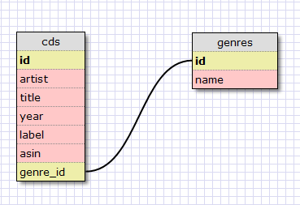

ここでは，Ruby on Rails を用いて簡単な Web アプリケーションを作成する．
音楽用 CD 管理をする Web アプリケーションを作ってみよう
rails コマンドでプロジェクトを作成する
$ rails cd_stock --database=postgresql
$ cd cd_stock
データベースを作成する
rake コマンドで作成する
$ rake db:create:all
PostgreSQL の createdb コマンドで作成する
$ sudo su postgres
$ createdb cd_stock_developemnt -E UTF8
$ createdb cd_stock_test -E UTF8
$ createdb cd_stock_production -E UTF8
$ exit
データベース設計
テーブル名: genres (音楽ジャンル情報を保存する)
| カラム名 | 型 | 説明 | |
|---|---|---|---|
| 1 | id | Integer | ID 主キー，自動インクリメント |
| 2 | name | String | ジャンル名 |
テーブル名: cds (CD 情報を保存する)
| カラム名 | 型 | 説明 | |
|---|---|---|---|
| 1 | id | Integer | ID 主キー，自動インクリメント |
| 2 | artist | String | アーティスト名 |
| 3 | title | String | CD タイトル |
| 4 | genre_id | Integer | ジャンル genres テーブルと関連付けられる |
| 5 | year | Integer | 発売年 |
| 6 | label | string | 発売元レーベル名 |
| 7 | asin | string | Amazon の ID |
テーブル構造の関連図

テーブルの情報を参考に，プログラムを作成する
$ ruby script/generate scaffold Genre name:string
$ ruby script/generate scaffold Cd artist:string title:string genre_id:integer year:integer label:string asin:string
データベース接続のための設定を行う
$ vi config/environment.rb
config.gem "postgres" # 追加する
$ vi config/database.yml
username: postgres # 変更する
必要な RubyGems をインストールする
$ sudo rake gems:install
PostgreSQL 用の Gems も自動的にインストールされるので前もってインストールしておかなくても良い
データベースにテーブルを作成する
$ rake db:migrate
作ったアプリケーションを実行して，データの登録などを行ってみよう
Web サーバを起動する
$ ruby script/server
ブラウザからアクセスする
ジャンルを登録してテーブルにデータ入っているかを確かめる
$ pgsql -U postgres cd_stock_development
=# SELECT * FROM genres;
CD を登録してテーブルにデータ入っているかを確かめる
=# SELECT * FROM cds;
Ruby on Rails には多くの規約(ルール)がある
【参考リンク】
Ruby on Rails でのデバッグはどのようにすれば良いのか
サーバをデバッグモードで再起動する
サーバを停止させるには，Web サーバのコンソール画面で Ctrl - c を押す
サーバが停止したら，-u オプションを付けて再起動する
$ ruby script/server -u
ブレークポイントを書く
ソース中で処理を止めたい所に debugger と記述する
1 class CdsController < ApplicationController 2 # GET /cds 3 # GET /cds.xml 4 def index 5 @cds = Cd.find(:all) 6 debugger # ブレークポイント debugger 設置 7 respond_to do |format| 8 format.html # index.html.erb 9 format.xml { render :xml => @cds } 10 end 11 end
その状態でアプリケーションを操作してみる
操作すると，ブレークポイントを設置した箇所で処理が止まり，Mongrel サーバの コンソールの中でインタプリタが動かせるようになっている。
l でソースの中で現在どの処理が実行中なのか教えてくれるn でステップ実行(1行ずつ実行するということ）c で処理再開